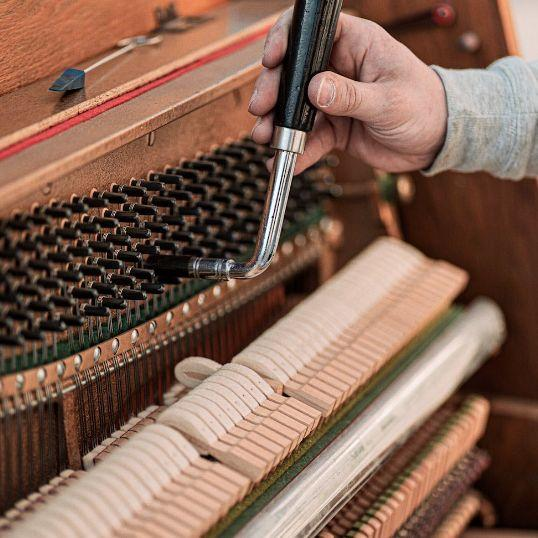
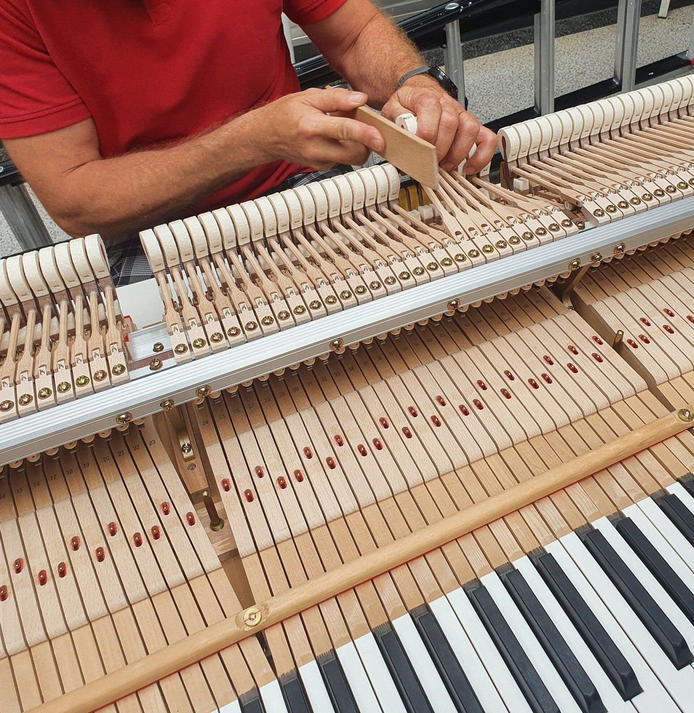
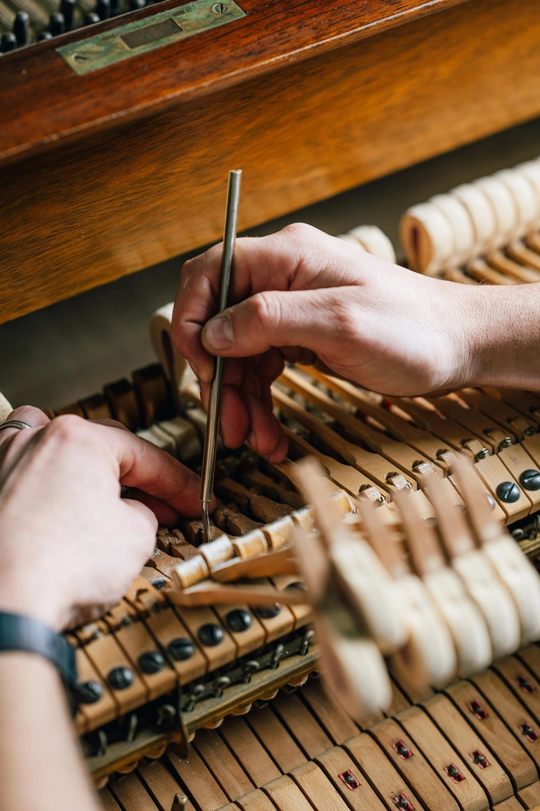
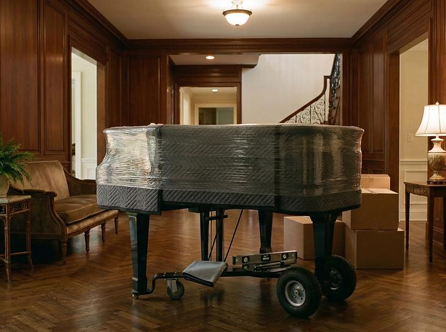
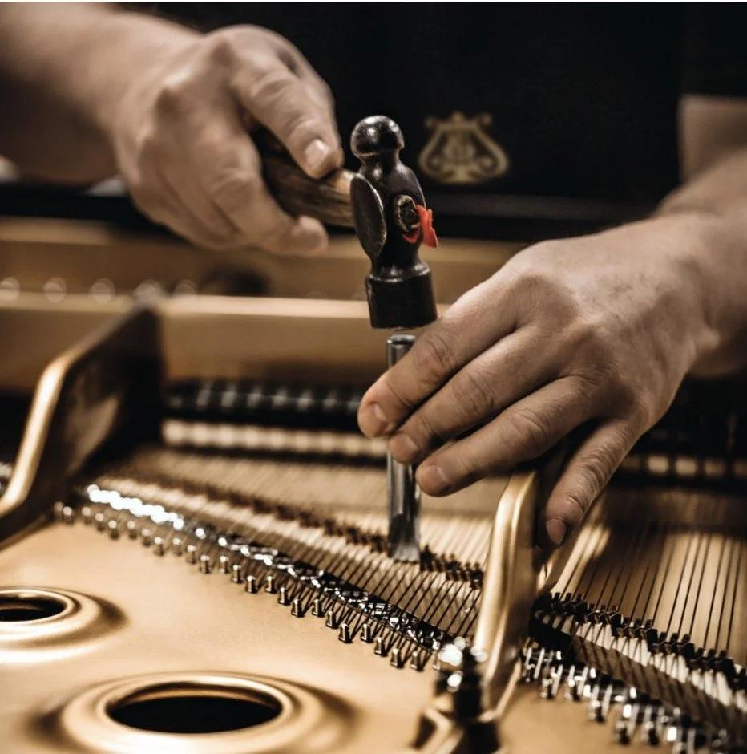

Our services
The care behind every sound.
The knowledge and experience that accompany every piano, from the first tuning to specialised technical care.

Specialised care
Every piano deserves the right care.
-

Piano tuning
Proper tuning is the foundation of the quality and balance of the sound. With knowledge of the construction and particular characteristics of each instrument, the piano is cared for with attention to detail.
-

Maintenance & regulation
Systematic maintenance and careful regulation of the action contribute to the proper functioning and responsiveness of the piano. Every intervention is adapted to the needs and condition of the instrument.
-

Piano repairs
From minor faults to more demanding technical work, repairing a piano requires experience and an understanding of its mechanism. The aim is reliable operation and the preservation of its particular character.
-
Piano rental
Renting offers a flexible option for different musical needs. The Nikotian House provides information and guidance on choosing a suitable instrument, depending on its use and availability.

-
Piano transport
Moving a piano calls for particular care because of its construction, its weight and its sensitivity. Proper organisation and careful handling are essential for moving it safely.

-
Piano appraisal
Appraising a piano is based on its construction, condition, age and technical characteristics. A specialised assessment helps form a more complete picture of the instrument.



The art of detail
Every detail matters.
Behind the sound of a piano lies a complex mechanism in which every detail affects the final result. Technical knowledge and careful work are an integral part of the Nikotian House’s philosophy.
Contact
Talk to us about your piano.
For information about the House’s services, the Nikotian team is at your disposal.